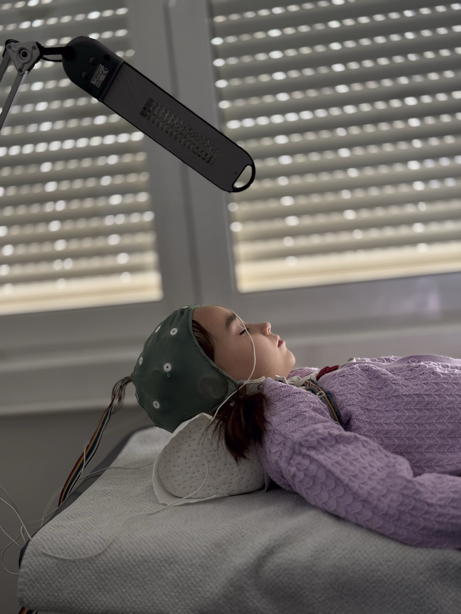

Muitos acham que "fechar" crise febril exige EEG e tomografia. No padrão simples, o diagnóstico já é clínico — e a rotina de imagem/eletroencefalograma sobra.
Diagnóstico clínico
O diagnóstico de crise febril é clínico. Como não é epilepsia, não se faz eletroencefalograma de rotina para "fechar" o diagnóstico. Não se faz tomografia de rotina pelo mesmo raciocínio — no padrão simples o diagnóstico já está feito.
Quando a clínica sai do padrão
O problema prático da complexa: o diagnóstico continua sendo clínico; se a clínica fica diferente, o raciocínio é prejudicado. A complexa gera dúvida — e dúvida é o produto operacional da atipia.
Três dúvidas que a complexa acende:
1
A criança já é epiléptica e a febre foi só gatilho?
2
Na verdade não é crise febril, e sim meningite?
3
Encefalite?
Investigação seletiva — não automática
Não é obrigatório investigar toda crise complexa com eletro + tomografia + líquor. Ainda assim, a complexa deixa pulga atrás da orelha para "bancar" o diagnóstico só clínico.
Em doenças de diagnóstico clínico, o problema operacional é: quando a crise sai do padrão, surge a pergunta se há necessidade de investigação. Marcar simples×complexa é marcar quando o clínico puro basta e quando a dúvida entra.
⛔ Não fazer de rotina na simples
EEG de rotina para "fechar" o diagnóstico?
NÃO
TC de rotina pelo mesmo raciocínio?
NÃO
Toda complexa = painel completo (eletro + TC + líquor)?
NÃO
A complexa gera dúvida seletiva, não painel cego. O exame entra quando a dúvida pede — não por protocolo automático.

EEG pediátrico — equipamento de exame. Na crise febril simples, EEG e TC não são de rotina (indicação seletiva). Child undergoing an EEG test with electrodes on the head while lying on a bed in a clinic setting · foto de Shixart1985, via Wikimedia Commons · CC BY 2.0 · Fonte: commons.wikimedia.org/wiki/File:Child_undergoing_an_EEG_test_with_electrodes_on_the_head_while_lying_on_a_bed_in_a_clinic_setting.jpg · O exame não confirma nem descarta CF; a regra é de indicação seletiva.
📌 Resumo operacional
Dx clínico · sem EEG/TC de rotina na simples · complexa = dúvida (epilepsia? meningite? encefalite?) · investigação seletiva.
Conexão
Na porta, a dúvida que manda a prioridade nos primeiros minutos não é "já é epiléptica" — é meningite.